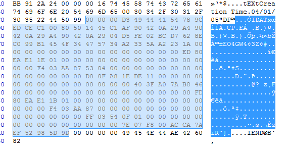

在客户端开发的时候，有时需要把密钥保存在本地。这时就会遇到密钥安全性的问题。要保证密钥安全性，无非就是混淆、隐藏、白盒等手段。本文以隐藏在图片中来阐述密钥的安全保存。
PNG图片
便携式网络图形(PNG)是一种无损压缩的位图图形格式，支持索引、灰度、RGB三种颜色方案以及Alpha通道等特性。
文件结构
PNG图像格式文件由一个8字节的PNG文件标识域和3个以上的后续数据块(IHDR, IDAT, IEND)组成。
| 十六进制 | 含义 |
|---|---|
| 89 | 用于检测传输系统是否支持8位的字符编码 |
| 50 4E 47 | PNG每个字母对应的ASCII |
| 0D 0A | DOS风格的换行符 |
| 1A | 在DOS命令下，用于阻止文件显示的文件结束符 |
| 0A | Unix风格的换行符 |
| PNG定义了两种类型的数据块：一种是PNG文件必须包含、读写软件也都必须要支持的关键块(critical chunk); 另一种叫做辅助块, PNG允许软件忽略它不认识的附加块。 | |
| 关键数据块中的4个标准数据块: | |
| - 文件头数据块IHDR：包含有图像基本信息，作为第一个数据块出现并只出现一次。 | |
| - 调色板数据块PLET：必须放在图像数据块之前。 | |
| - 图像数据块IDAT：存储实际图像数据。PNG数据允许包含多个连续的图像数据块。 | |
| - 图像结束数据IEND：放在文件尾部，表示PNG数据流结束。 | |
| 每个数据块都由下表所示的4个域组成 |
| 名称 | 字节数 | 说明 |
|---|---|---|
| length | 4字节 | 指定数据块中数据域的长度，不超过2^31-1字节 |
| Chunk Type Code(数据块类型) | 4字节 | 数据块类型码由ASCII字母A-Za-z组成 |
| Chunk Data(数据块数据) | 可变长度 | 存储按照Chunk Type Code指定的数据 |
| CRC(循环冗余检测) | 4字节 | 存储用来检测是否有错误的循环冗余码,计算不包括length字段 |
例子
以下面这张图片为例，使用Hxd工具来看一下实际的数据。
我们用Hxd工具打开图片，首先看到的是89 50 4E 47 0D 0A 1A 0A，表示是一张PNG图片。
紧接着的是IHDR。前面4字节表示长度，长度后面的4个字节是数据块类型，接着是数据块数据，最后4字节是CRC。
再接着是PLTE调色板数据块，格式同上。
然后我们会看到tEXt数据块，这个是可选数据块，里面可以放入图片的介绍说明，同时我们也可以将密钥放在其中。
然后是图像数据块IDAT。

最后是图像结束数据IEND。
CRC算法
CRC是一种根据网络数据包或电脑文件等数据产生简短固定位数校验码的一种散列函数，主要用来检测或校验数据传输或者保存后可能出现的错误。它是校验和的一种，是两个字节数据流采用二进制除法（没有进位，使用XOR来代替减法）相除所得到的余数。
PNG图片中的CRC算法为CRC32。其多项式表示为0x04C11DB7或者0xEDB88320(反转)。另外CRC计算值可以到在线网站比如ip33上计算得到。
下面是用代码实现的CRC32算法：
1 |
|
图片中的密钥
tEXt隐藏
在图片中增加密钥，可以在非关键字段比如tEXt中进行。首先要去除原先图片中tEXt字段，然后填充自己要加入的tEXt字段。
1 | int generateNewPng() { |
填充完所要的数据后，接着在程序中可以解析新图片中tEXt字段。
1 | int getPayload(const char *res) { |
LBS隐藏
LBS隐藏是一种更加隐秘的隐藏手段。它通过改写IDAT数据中的RGB三通道数据的低3位，把密钥藏进去。因为只改写了低位数据，所以人眼往往很难区分出来。具体的实现可以参考cloacked-pixel。由于每个像素点最多隐藏3位，就会导致一个量的问题。当隐藏的数据比较多时，就会需要比较大的图片。